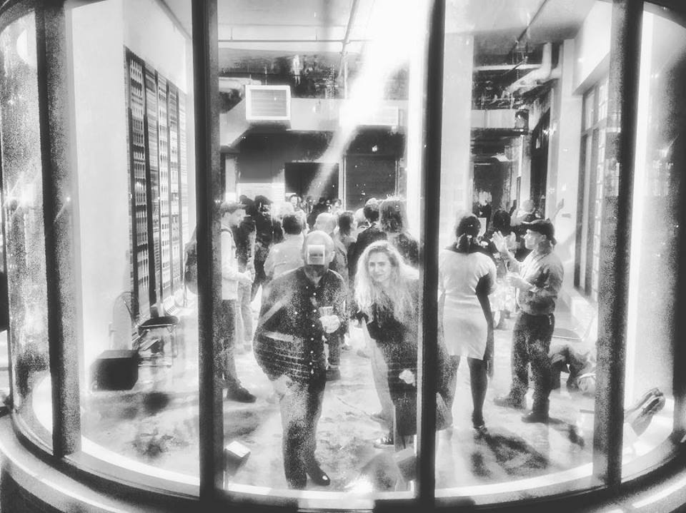

Test Patterns
Curated by Kelly Rae Aldridge, coordinated & documented by Sydney Gobin, operated by Ludi Leiva, Josh Peterson, Joy Peng, and Mason Poli. Volunteers included Anna Talley, Brooke Stone, and Nancy DaSilva.
In the Fall of 2016, The Current invited artists, technologists, scholars, and the art-curious to 60 Sullivan Street, NYC for a series of tests and discussions exploring the future of museums and digital art.
Over 350 visitors saw the show, we held a sold-out closing dance party for nearly 200 people, and our artist-in-residence, Hyphen-Labs, was accepted into Sundance's New Frontier.
Forbes, Bedford & Bowery, The Creators Project, Artnet, and NY Mag all had nice things to say. ArtFCity described it as "a totally bonkers, holodeck-style install...like more than a dozen must-see exhibitions in one night."
Nov 4, 2016 6–10pm
The Current Museum of Art calibrates its vision alongside works by Kawandeep Virdee, Daniel Temkin, Claudia Hart, Matthew Biederman, Carmen Aguilar y Wedge, Nitzan Bartov, Ashley Baccus-Clark, Ece Tankal, Sam Lavigne, Seth Cluett, Charles Eppley, and Casey Reas that interrogate how signals configure images, how concepts resolve into focus, and what patterns we can set in motion for the future of art.
TRANSFER experiments with digital media formats in an immersive triptych rotating 3D video, generative software, and animation works by artists such as Philip David Stearns, Rosa Menken, Rick Silva, Nicolas Sassoon, Rollin Leonard, and Laturbo Avedon.
Nov 10, 2016 7–10pm
Avant and The Current present a sound environment calibrated to our space with software-score by artist-composer Seth Cluett.
Nov 17, 2016 7–9pm
An intimate cross-industry roundtable to critique, brainstorm, and discuss the future of museums in the digital age. We’ll test ideas for our next steps as an institution and ask the hard questions from conservation to commerce, tradition to entrepreneurship. We might talk jet packs.
Oct 24, 2016 6–8pm
Dec 5, 2016 6–9pm
Think drink ‘n draw, but no nude models; just naked algorithms. A night to code, chill, and experiment with computationally-inspired art. Bring your laptops, we’ll bring canvas and glue.
Dec 7, 2016 7–9pm
Artists, art historians and media theorists lead a public conversation about Test Patterns facilitated by curator Kelly Rae Aldridge.
Dec 10, 2016 8pm–1am
We're throwing a dance party surrounded by virtual reality, immersive cinema, projections, sound, and augmented reality installations from The Current Test Patterns and TRANSFER Download. There will be snacks, DJ Just Max (NotNo/HeavyRoc Music), and a cash bar. ┏(-_-)┛
©2016-2017 The Current Museum of Art, a 501(c)(3) public charitable trust.